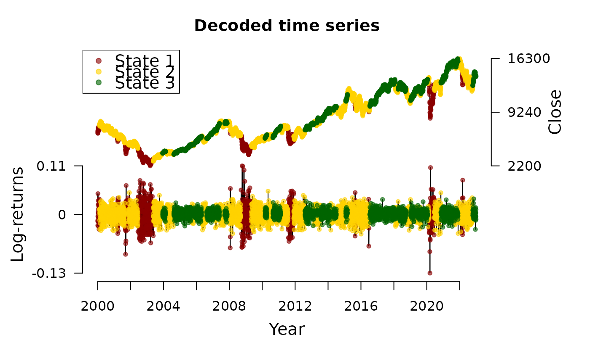

This function decodes the (most likely) underlying hidden state sequence by applying the Viterbi algorithm for global decoding.
Usage
decode_states(x, verbose = TRUE)
viterbi(observations, nstates, sdd, Gamma, mu, sigma = NULL, df = NULL)Arguments
- x
An object of class
fHMM_model.- verbose
Set to
TRUEto print progress messages.- observations
A
numericvectorof state-dependent observations.- nstates
The number of states.
- sdd
A
character, specifying the state-dependent distribution. One of"normal"(the normal distribution),"lognormal"(the log-normal distribution),"t"(the t-distribution),"gamma"(the gamma distribution),"poisson"(the Poisson distribution).
- Gamma
A transition probability
matrixof dimensionnstates.- mu
A
numericvector of expected values for the state-dependent distribution in the different states of lengthnstates.For the gamma- or Poisson-distribution,
mumust be positive.- sigma
A positive
numericvector of standard deviations for the state-dependent distribution in the different states of lengthnstates.Not relevant in case of a state-dependent Poisson distribution.
- df
A positive
numericvector of degrees of freedom for the state-dependent distribution in the different states of lengthnstates.Only relevant in case of a state-dependent t-distribution.
Value
An object of class fHMM_model with decoded state sequence
included.
Examples
decode_states(dax_model_3t)
#> Decoded states
#> fHMM fitted model:
#> * total estimation time: 13 mins
#> * accepted runs: 33 of 200
#> * log-likelihood: 17649.52
plot(dax_model_3t, type = "ts")

viterbi(
observations = c(1, 1, 1, 10, 10, 10),
nstates = 2,
sdd = "poisson",
Gamma = matrix(0.5, 2, 2),
mu = c(1, 10)
)
#> [1] 1 1 1 2 2 2